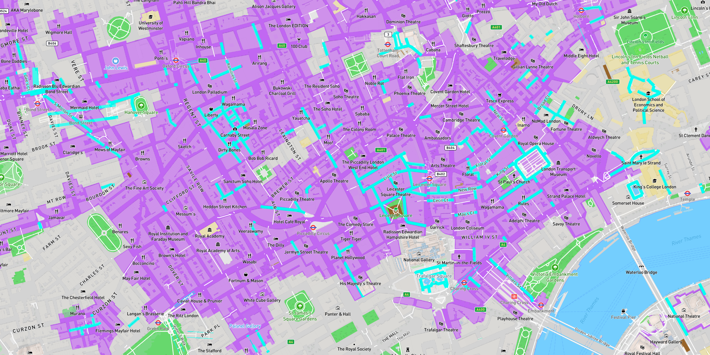
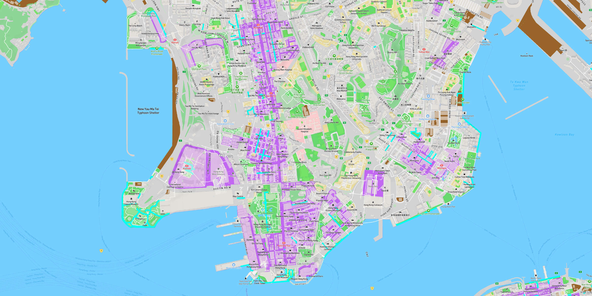
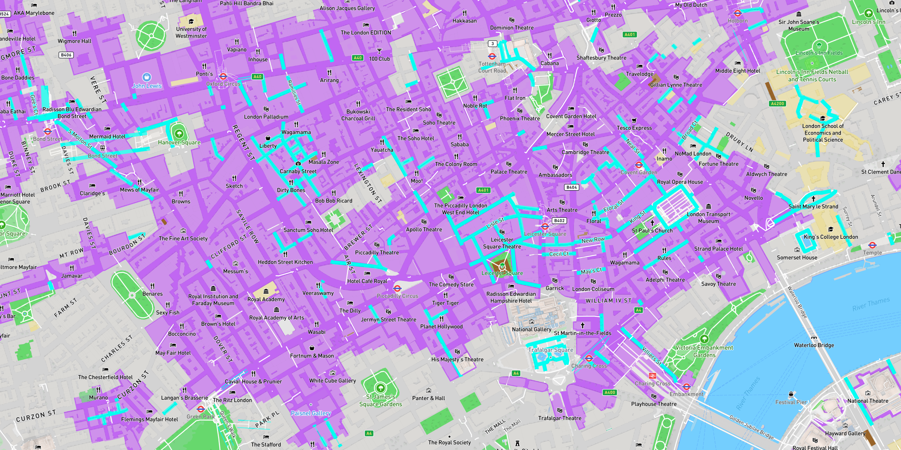
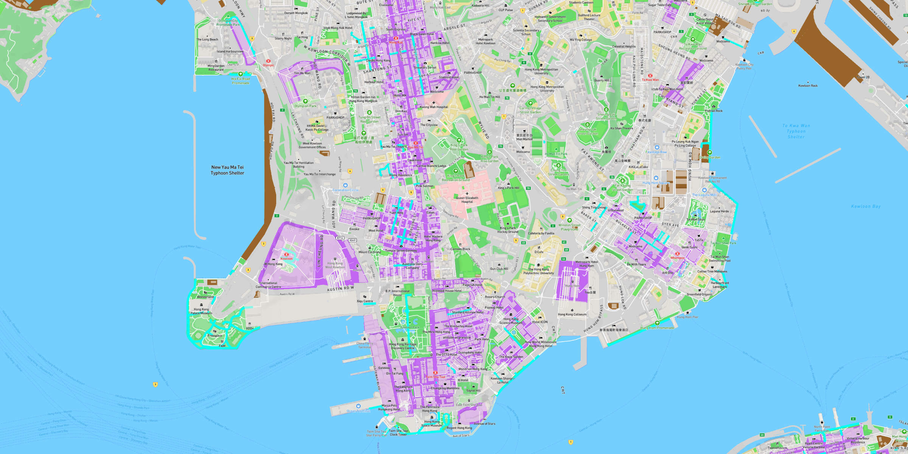

Explore on foot
My style is called Explore on foot and is based on the pedestrian streets.

I got the inspiration from walking pedestrian signs.
Icon created by Yon ten
In my map, walking pedestrians represent cities, and cyan-blue lines represent pedestrian streets.
Purple areas are commercial areas. The education areas are colored in light burlywood. Industry areas are in brown and hospitals are light pink.
The map changes when you zoom in and out.

 



Let's explore pedestrian streets in different cities, starting from San Francisco, CA.
Los Angeles, CA.
Washington DC.
New York City, NY.
Let's go to different countries, London, UK.
Hong Kong SAR, China.
Let's start Exploring!
Credits:
Map created with Mapbox Studio
Data from openstreetmap